August 13, 2025 · academia, advice, reflections
"These conferences seem cool, but what do you get out of attending them?"
—asked my ever-inquisitive brother, curious why we bother travelling to different cities and countries to… do more work? Chat with some friends?
At some point during your academic quests, you've probably been in conversations with peers or supervisors about conferences; which ones are you thinking of attending? What research could you present? Who else might attend that you should connect with? When is the abstract deadline? Would you do a poster or a spoken presentation?
But let's take a step back; what's the deal with these conferences anyway?
Hopefully this post spotlights why you should consider attending an academic conference, supplemented by the recent experience of some MPL lab members who attended the 18th International Conference for Music Perception and Cognition (ICMPC18), this July in São Paulo, Brazil.
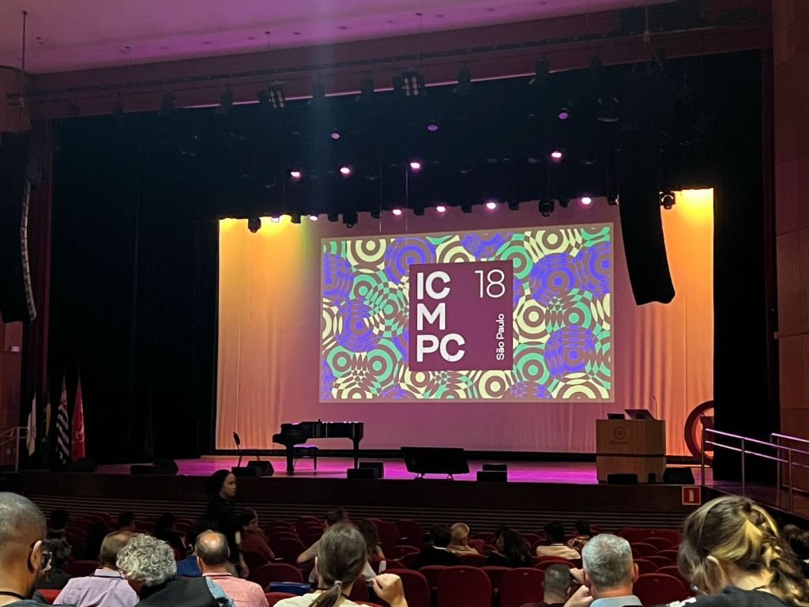
Here are some key takeaways we'll dive into a bit more.
Conferences provide the opportunity to:
Networking and connecting go hand-in-hand in explaining what I value most about conferences.
Networking – knowing more people – is extremely valuable. In a shared venue with tens to hundreds other people, this mission is pretty straightforward; talk to other attendees, go to presentations, posters, workshop sessions, and get to know other researchers who (would you believe your luck) share fields of research and interests with you! Networking is not only fun during mingling time but may also prove helpful when you are looking for collaborators and even future positions or places of work…
If networking is the cake, connecting – knowing people more – is the filling.
Generally, most conference attendees are travelling to attend the hosting location, and everyone is pretty tired from the packed schedule each day. This means everyone will be on the hunt for places to eat lunch and dinner and someone to tell them where to go.
These offer perfect opportunities to ask people (go wild and get a group together!) to join you at a food spot you've found. I find it's these more relaxed environments in which I build the strongest connections. Take full advantage of the hosting location too – explore, sightsee, try new food, and get a feel for the culture of the city.
Be sure to step outside your comfort zone – talking to new people, note down emails (or look them up later!), and follow up with them after the conference. Oftentimes, this is the one time you will get to see these people in person for a while depending on the location and size of the conference, so make the most of it!
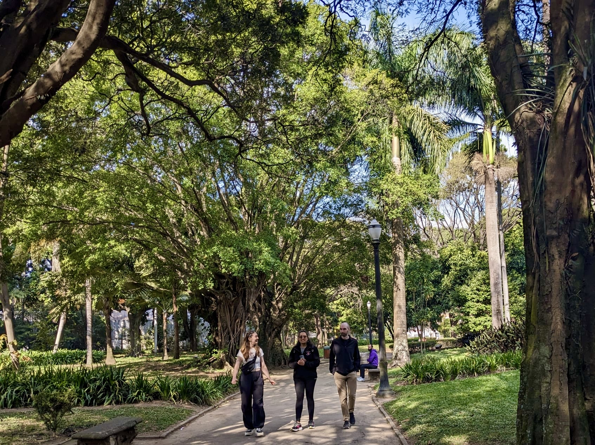
Presenting your research is both thrilling and daunting. Most academics will tell you that they still have nerves before they speak. Nevertheless, the experience gained from presenting is crucial to your studies and whatever lies ahead – next job interview, your PhD thesis, public-facing interviews with news corporations, think big!
Conferences provide the opportunity to present your work (completed or in-progress), opening it up to questions and feedback; think of this as an idea exchange. You can learn from other researchers, practice receiving and answering questions, test your explanations and justifications for certain choices, etc. etc.
Conferences can be treated as a friendly preparation experience to build skills needed to handle those other academic tasks that hold a little more immediate consequence…
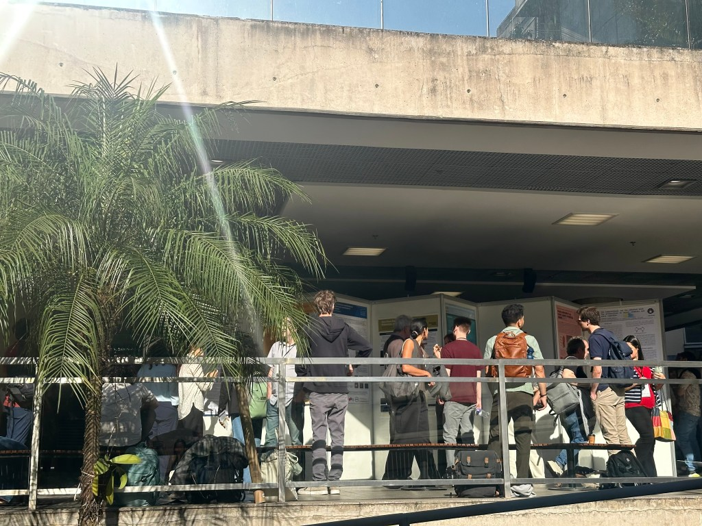
Researchers, just like you, are coming to these conferences excited to share their most recent insights, findings, and works-in-progress. By attending these presentations, you're getting a front row seat to hear about the freshest developments in the field.
Not only is this stimulating, but it is also informative and probably helpful in guiding your own future studies – what are promising avenues to investigate next? What has/is already being done? Where are the remaining and new gaps? Bonus question: who might be useful to get in contact with to discuss a potential collaborative project?
Additionally, going to conferences is an opportune chance to get a "lay of the land". This could be getting the low down on your favourite researchers, discussing university differences, and learning some cultural tidbits from others.
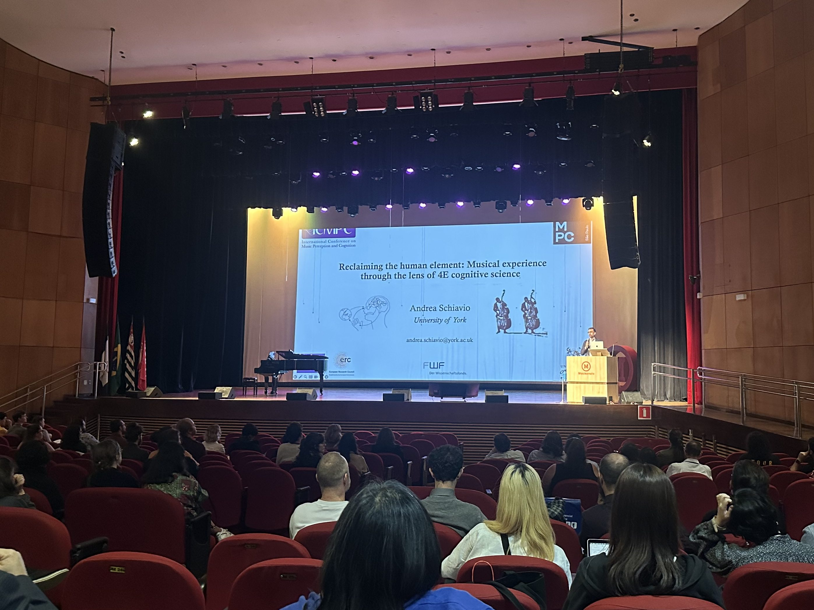
Academic conferences can be quite tiring from all the talking, taking notes, presentation pressures, and realities of work waiting for you when you get back. Yet even still, I always find myself energised with a renewed motivation and enthusiasm for research upon leaving.
Everyone else has their own special interest, looking for new directions to take their explorations, and going through those familiar stages of experimental designs, data collection, analyses, and write-ups — just the same as you.
Being around others who are producing new, interesting research, and are equally as interested in what you have been thinking up is one of the best things you can do to remind yourself of why you started on this academic quest in the first place.
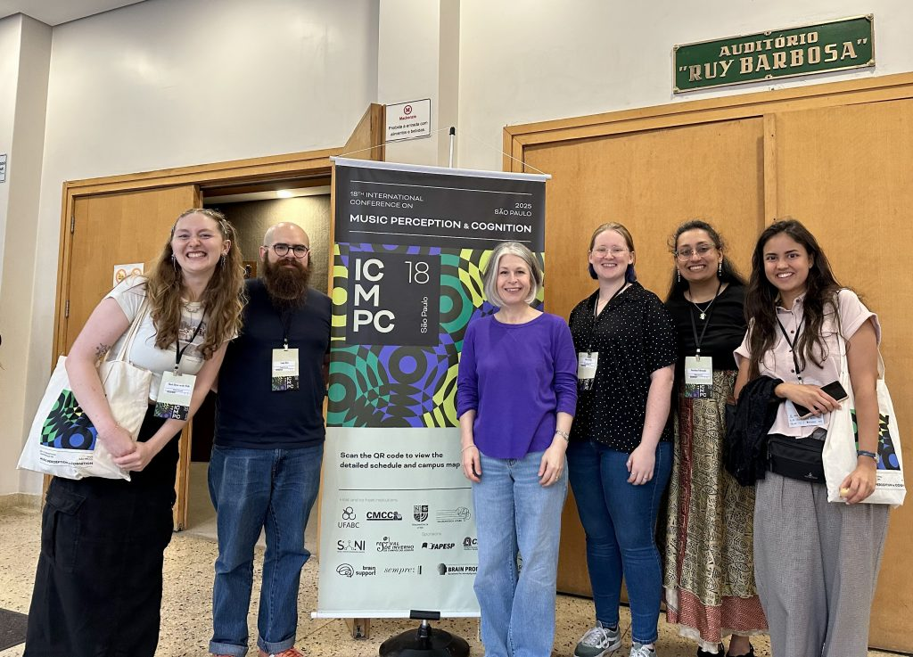
ICMPC is a well-known conference and large event in the field of Music Psychology and has showcased a multitude of innovative and informative research projects within the field.
The conference spanned five full days and had many informative talks and keynotes, plus a range of workshops and events featuring psychology and neuroscience techniques to performances of music and traditional capoeira dance! We were able to attend sessions from presenters in-person and online from our music psychology community around the globe on a variety of topics – music technology, culture, dance, 4E-cognition, measurement techniques, and imagination.
In our time off the clock from the conference schedule, we enjoyed adventuring out together to enjoy the incredible nature in the cities and dedicated parks, the phenomenal range of art galleries and museums, and of course the food. Some favourite Brazilian food we enjoyed together included Pastel de Palmito (fried pastries with heart of palm in them), Coxinha (chicken croquettes), Pão de Queijo (cheese bread), and Brigadeiros (rolled chocolate-based truffles).
Overall sentiments: we are extremely grateful to have been able to travel and experience ICMPC in São Paulo this year – an inspiring conference hosted in an incredible city.
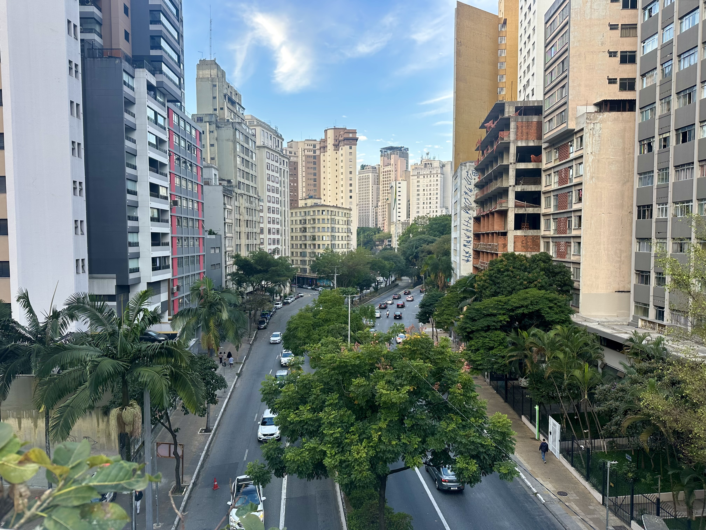
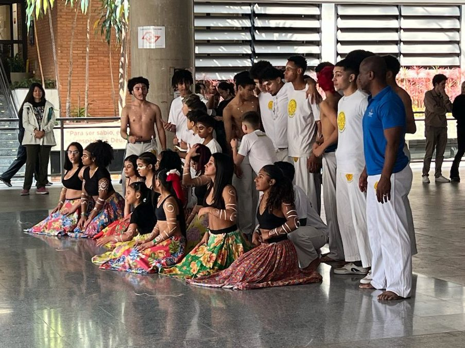
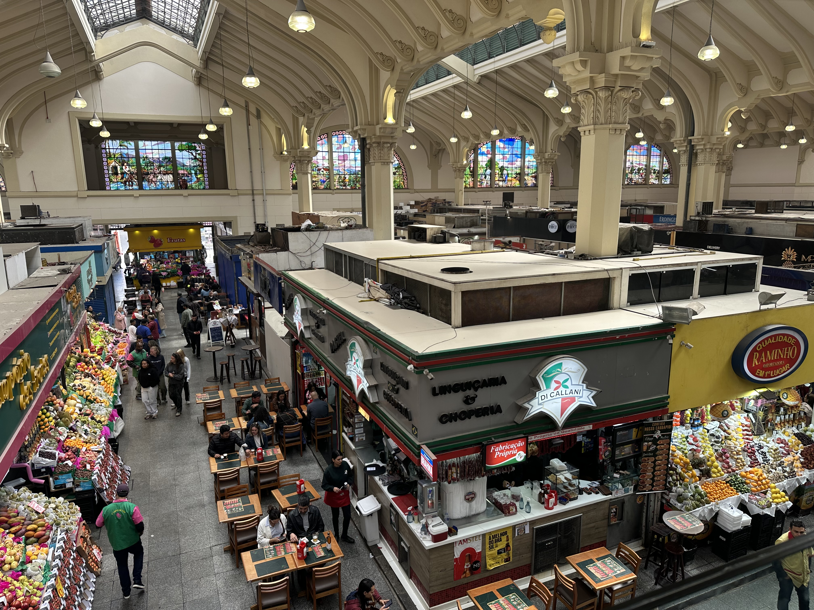
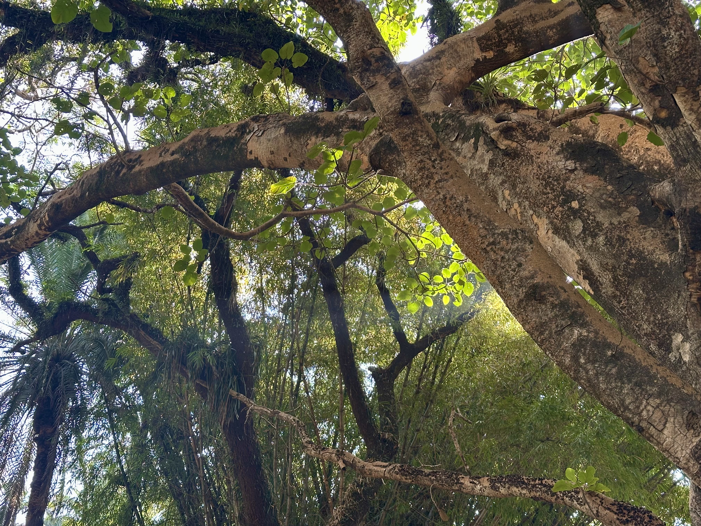
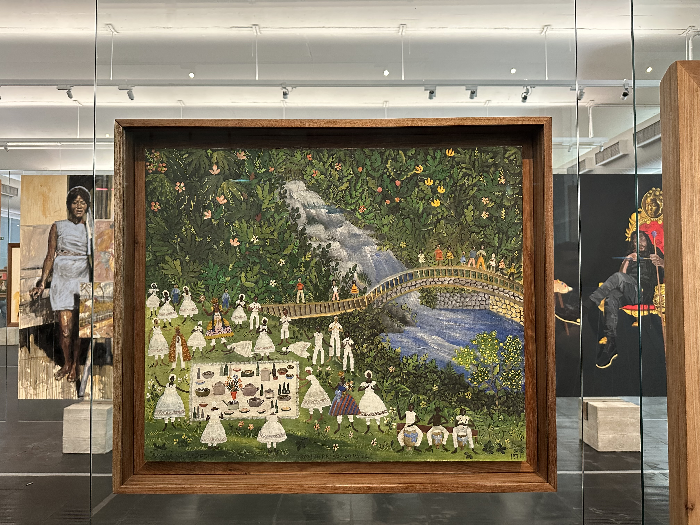
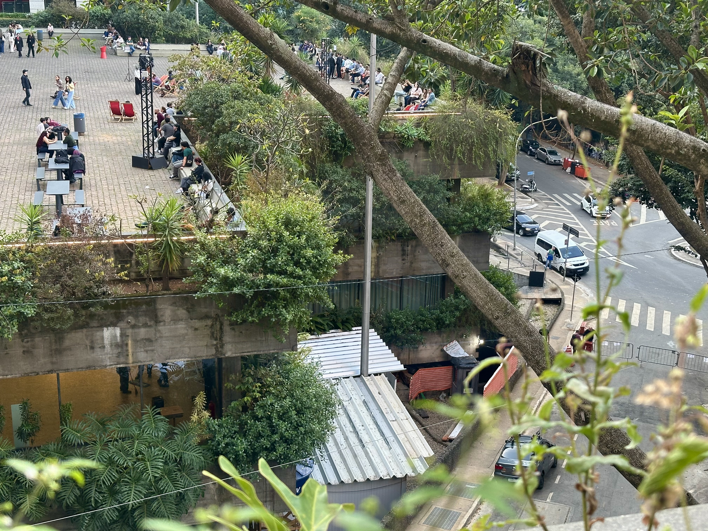